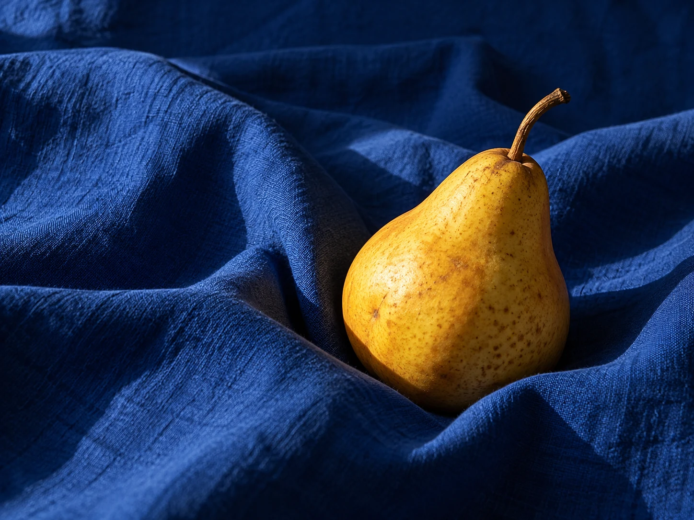

folio
Keep the feeling.
SUNDAY STUDIESYour selected frames

Sample edit: 16 crops from one image.
Light, held
a little longer.
Not every frame needs to say everything. Sometimes a fold, a shadow, a little imperfection is enough.
Folio finds the through line.
You keep the feeling.
Sunday studies. The final selection.Selected with Folio.